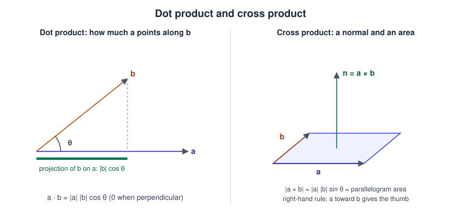
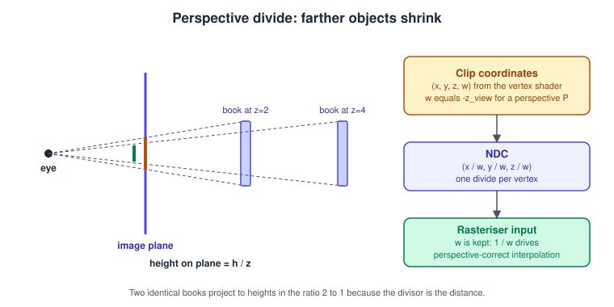
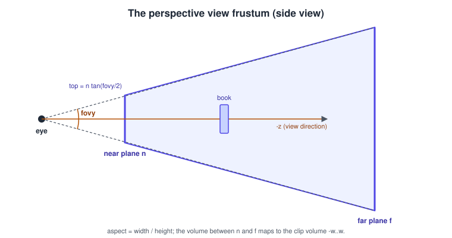
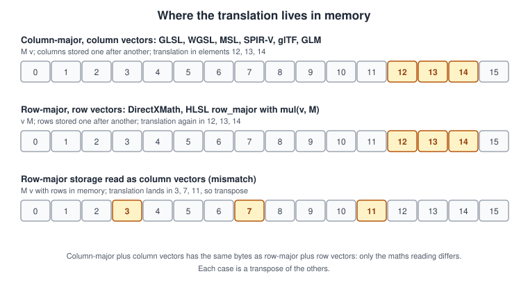
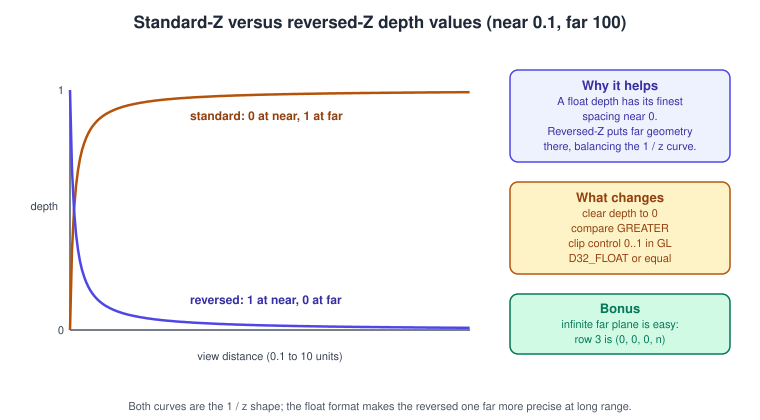

Vectors, Matrices and Homogeneous Coordinates
|
This content was generated with the assistance of AI and should be verified against the official documentation before being relied on in production. |
Graphics programming is applied linear algebra on a very small set of objects: three- and four-component vectors and \(4 \times 4\) matrices. Once you know what a dot product measures, why a matrix can hold a translation, and what \(w\) does, the rest of the pipeline stops being magic and the usual bugs (invisible objects, mirrored models, flickering distant surfaces) become easy to diagnose. This page covers the mathematics that every API shares, then the conventions that differ between them.
The facts were checked in November 2026. The conventions apply to GLSL 4.60, WGSL as in the W3C WebGPU draft of 2026-09-15, the Metal Shading Language, HLSL (for context), glTF 2.0 and the common maths libraries (GLM, Eigen, DirectXMath, gl-matrix, three.js). There are no hardware requirements, but reversed-Z needs a floating-point depth buffer, which every current desktop, mobile and web GPU provides. The page assumes only school-level trigonometry. Coordinate Spaces and Transforms uses these tools to follow a vertex from object space to the screen.
Vectors and points
A vector in 3D is an ordered triple \((x, y, z)\). It can mean a position (a point in space), a direction (a displacement or an axis), or just three numbers (a colour, a set of weights). Keeping the first two apart matters in the next sections: a point can be translated, a direction cannot.
The length of a vector is \(\lVert \mathbf{a} \rVert = \sqrt{a_x^2 + a_y^2 + a_z^2}\), and a unit vector (length 1) is made by dividing by it, which GPU shading languages call normalize. Almost every lighting formula expects unit vectors, so renormalise after interpolating normals across a triangle, because interpolation shortens them.
Dot product
The dot product of two vectors is
\[ \mathbf{a} \cdot \mathbf{b} = a_x b_x + a_y b_y + a_z b_z = \lVert \mathbf{a} \rVert \, \lVert \mathbf{b} \rVert \cos\theta \]
where \(\theta\) is the angle between them. For two unit vectors it is simply \(\cos\theta\): 1 when they point the same way, 0 when perpendicular, -1 when opposite. It is the most used operation in shaders:
-
Diffuse lighting is \(\max(\mathbf{n} \cdot \mathbf{l}, 0)\) for a unit surface normal \(\mathbf{n}\) and a unit vector \(\mathbf{l}\) towards the light.
-
The Blinn-Phong highlight uses \(\mathbf{n} \cdot \mathbf{h}\) with the half vector \(\mathbf{h}\) between the light and view directions.
-
The signed distance of a point to a plane with unit normal \(\mathbf{n}\) and offset \(d\) is \(\mathbf{n} \cdot \mathbf{p} + d\), which is how frustum culling tests bounding spheres against the six planes.
-
Back-face tests compare the face normal with the direction to the eye.
Cross product
The cross product is defined only in 3D. For vectors \(\mathbf{a}\) and \(\mathbf{b}\), the vector \(\mathbf{a} \times \mathbf{b}\) is perpendicular to both, has the length \(\lVert \mathbf{a} \rVert \lVert \mathbf{b} \rVert \sin\theta\) (the area of the parallelogram they span), and its direction follows the right-hand rule in a right-handed system. In components:
\[ \mathbf{a} \times \mathbf{b} = (a_y b_z - a_z b_y, \; a_z b_x - a_x b_z, \; a_x b_y - a_y b_x) \]
It is anti-commutative, \(\mathbf{a} \times \mathbf{b} = -(\mathbf{b} \times \mathbf{a})\), so swapping the operands flips the result, which is exactly what reversing a triangle’s winding order does. Use it to compute the face normal of a triangle ((p_0, p_1, p_2)\) as \(\mathrm{normalize}((p_1 - p_0) \times (p_2 - p_0))\), to build a camera basis (look-at), and to build a tangent frame for normal mapping.

// Fragment shader excerpt: diffuse and Blinn-Phong terms for one lamp
vec3 n = normalize(vNormal); // interpolated normals are no longer unit length
vec3 l = normalize(uLampPos - vWorldPos); // towards the lamp
vec3 v = normalize(uEyePos - vWorldPos); // towards the eye
vec3 h = normalize(l + v); // half vector
float diffuse = max(dot(n, l), 0.0);
float specular = pow(max(dot(n, h), 0.0), uShininess) * float(diffuse > 0.0);
// Face normal in a geometry-free way: from screen-space derivatives
vec3 faceNormal = normalize(cross(dFdx(vWorldPos), dFdy(vWorldPos)));Source: OpenGL 4 reference: dot, cross and normalize.
Other built-ins worth knowing are reflect (mirror a direction about a normal, used for specular and environment reflections), refract, length, distance and mix (linear interpolation). WGSL, MSL and HLSL have the same functions under the same names.
Matrices
A \(4 \times 4\) matrix \(A\) multiplied by a column vector \(\mathbf{v}\) with four components gives a new vector \(A \mathbf{v}\), whose \(i\)-th component is the dot product of the \(i\)-th row of \(A\) with \(\mathbf{v}\). Multiplying two matrices composes the transformations:
\[ (A B) \mathbf{v} = A (B \mathbf{v}) \]
so the right-hand matrix is applied first. Matrix multiplication is associative but not commutative: rotating then translating is different from translating then rotating. The identity matrix \(I\) leaves vectors unchanged, the inverse \(A^{-1}\) undoes \(A\), and the transpose \(A^{T}\) swaps rows and columns.
The three basic transformations, for column vectors, are:
\[ T(t) = \begin{pmatrix} 1 & 0 & 0 & t_x \\ 0 & 1 & 0 & t_y \\ 0 & 0 & 1 & t_z \\ 0 & 0 & 0 & 1 \end{pmatrix}, \quad S(s) = \begin{pmatrix} s_x & 0 & 0 & 0 \\ 0 & s_y & 0 & 0 \\ 0 & 0 & s_z & 0 \\ 0 & 0 & 0 & 1 \end{pmatrix}, \quad R_y(\alpha) = \begin{pmatrix} \cos\alpha & 0 & \sin\alpha & 0 \\ 0 & 1 & 0 & 0 \\ -\sin\alpha & 0 & \cos\alpha & 0 \\ 0 & 0 & 0 & 1 \end{pmatrix} \]
The rotation shown is about the Y axis, counter-clockwise when looking down the axis towards the origin in a right-handed system (the book on the shelf turning to face the viewer). Rotations about X and Z are analogous. Gimbal lock, quaternions and interpolation are covered in Rotations and Quaternions.
Properties used constantly:
-
A rotation matrix is orthonormal: its inverse is its transpose, \(R^{-1} = R^{T}\). A rigid transform (rotation \(R\) plus translation \(\mathbf{t}\)) therefore has the inverse that maps \(\mathbf{x}\) to \(R^{T}(\mathbf{x} - \mathbf{t})\), cheaper and more stable than a general inverse. This is how the view matrix is derived from a camera pose.
-
The determinant of the upper-left \(3 \times 3\) block is the volume scale factor. A negative determinant means a mirror, which reverses triangle winding (a model with a negative scale on one axis appears inside out unless culling is adapted).
-
Repeated multiplication accumulates rounding error, so a matrix built from many incremental rotations drifts away from orthonormal. Re-orthonormalise, or better keep a quaternion and rebuild the matrix each frame.
#include <math.h>
#include <string.h>
typedef struct { float m[16]; } Mat4; /* column-major: element (row r, column c) is m[c * 4 + r] */
Mat4 mat4_identity(void)
{
Mat4 r;
memset(&r, 0, sizeof r);
r.m[0] = r.m[5] = r.m[10] = r.m[15] = 1.0f;
return r;
}
Mat4 mat4_mul(Mat4 a, Mat4 b) /* returns a * b: b is applied first */
{
Mat4 r;
for (int c = 0; c < 4; ++c)
for (int row = 0; row < 4; ++row) {
float s = 0.0f;
for (int k = 0; k < 4; ++k)
s += a.m[k * 4 + row] * b.m[c * 4 + k];
r.m[c * 4 + row] = s;
}
return r;
}
Mat4 mat4_translation(float x, float y, float z)
{
Mat4 r = mat4_identity();
r.m[12] = x; r.m[13] = y; r.m[14] = z; /* fourth column */
return r;
}
Mat4 mat4_rotation_y(float a)
{
Mat4 r = mat4_identity();
r.m[0] = cosf(a); r.m[8] = sinf(a);
r.m[2] = -sinf(a); r.m[10] = cosf(a);
return r;
}
/* Place a book: turn it about its own Y axis, then move it onto the shelf board. */
Mat4 book_model(float angle, float x, float y, float z)
{
return mat4_mul(mat4_translation(x, y, z), mat4_rotation_y(angle));
}Source: OpenGL 2.1 reference: glRotate for the rotation matrix form.
Homogeneous coordinates
A \(3 \times 3\) matrix can rotate and scale a 3D vector but cannot translate it, because translation adds a constant, which is not a linear map. The fix is to add a fourth coordinate. A 3D point \((x, y, z)\) is written \((x, y, z, 1)\), and then translation becomes a matrix product, so rotation, scaling, translation and projection are all \(4 \times 4\) matrices that compose by multiplication. This is why a single \(P V M\) matrix can carry a vertex from the model to the screen.
A homogeneous vector \((x, y, z, w)\) represents the 3D point \((x/w, \, y/w, \, z/w)\) when \(w \neq 0\), so \((2, 4, 6, 2)\) and \((1, 2, 3, 1)\) are the same point: scaling all four components gives an equivalent representation. This has two consequences:
-
Points have \(w = 1\), directions have \(w = 0\). In \(T \mathbf{v}\), the translation column is multiplied by \(w\). With \(w = 1\) the point is moved; with \(w = 0\) the vector is only rotated and scaled, which is what you want for normals, light directions and velocities. A direction can be seen as a point infinitely far away, so a directional light is a point light at infinity.
-
A projection matrix can set \(w\) to something other than 1. The perspective matrix copies the negative view-space depth into \(w\). The hardware then divides by \(w\), and objects that are farther away (larger \(-z\)) shrink.
The perspective divide
After the vertex shader outputs the clip-space position, the fixed-function stage clips against the volume \(-w \le x, y \le w\) and the depth range, then divides each coordinate by \(w\):
\[ \left( x_{ndc}, \, y_{ndc}, \, z_{ndc} \right) = \left( \frac{x_{clip}}{w_{clip}}, \; \frac{y_{clip}}{w_{clip}}, \; \frac{z_{clip}}{w_{clip}} \right) \]
For a perspective projection \(w_{clip} = -z_{view}\), which is the distance in front of the camera, so a point’s position on screen is proportional to its view-space \(x\) or \(y\) divided by its distance. This is the similar-triangles rule of a pinhole camera: an object twice as far away appears half as tall.

Perspective-correct interpolation
The rasteriser interpolates vertex outputs (texture coordinates, normals, colours) across the triangle. If it interpolated them linearly in screen space, textures would swim and bend, because the screen is a perspective view of the triangle: equal steps on screen are not equal steps on the surface. Hardware interpolates \(a/w\) and \(1/w\) linearly and divides at each pixel:
\[ a = \frac{\lambda_0 \, a_0 / w_0 + \lambda_1 \, a_1 / w_1 + \lambda_2 \, a_2 / w_2}{\lambda_0 / w_0 + \lambda_1 / w_1 + \lambda_2 / w_2} \]
where \(\lambda_i\) are the screen-space barycentric weights and \(a_i\), \(w_i\) the vertex values. This is why gl_Position.w must be preserved: it is the reason the rasteriser input in the figure above keeps \(1/w\). Interpolation qualifiers such as noperspective in GLSL, noperspective in HLSL and @interpolate(linear) in WGSL switch it off for effects like screen-space wireframes. Early consoles that interpolated textures affinely produced the characteristic warped surfaces of mid-1990s games.
Projection matrices
A projection matrix maps the view frustum (or a box, for orthographic projection) to the clip volume.
The view frustum
A perspective frustum is a truncated pyramid defined by the vertical field of view \(\theta\), the aspect ratio \(a\) (width divided by height), and the distances \(n\) (near) and \(f\) (far) of the clipping planes. Everything between them that lies inside the four side planes is visible.

The extents of the near plane are \(t = n \tan(\theta/2)\) at the top and \(r = a \, t\) on the right (symmetric frustum). The perspective matrix for column vectors, a right-handed view space looking down -Z and an OpenGL clip range of -1 to 1 is
\[ P_{GL} = \begin{pmatrix} \frac{n}{r} & 0 & 0 & 0 \\ 0 & \frac{n}{t} & 0 & 0 \\ 0 & 0 & -\frac{f + n}{f - n} & -\frac{2 f n}{f - n} \\ 0 & 0 & -1 & 0 \end{pmatrix} \]
which is the same matrix as the form with \(1/\tan(\theta/2)\) on the diagonal, because \(n/t = 1/\tan(\theta/2)\). The 0 to 1 depth variant for Direct3D, Vulkan, Metal and WebGPU only changes the third row, as in Coordinate Spaces and Transforms. For an off-axis (asymmetric) frustum, as needed by head-mounted displays and by augmented reality cameras whose optical centre is not the image centre, the matrix gets non-zero entries in the third column:
\[ P = \begin{pmatrix} \frac{2n}{r - l} & 0 & \frac{r + l}{r - l} & 0 \\ 0 & \frac{2n}{t - b} & \frac{t + b}{t - b} & 0 \\ 0 & 0 & -\frac{f + n}{f - n} & -\frac{2 f n}{f - n} \\ 0 & 0 & -1 & 0 \end{pmatrix} \]
OpenXR gives each eye four field-of-view angles (left, right, up, down), which map directly to \(l\), \(r\), \(b\) and \(t\) via \(n \tan(\cdot)\). AR frameworks supply a camera intrinsic matrix (focal lengths and principal point) that can be converted to the same form, and the irurueta-geometry component of this site implements pinhole camera models with the same quantities.
Orthographic projection
An orthographic projection keeps parallel lines parallel: \(w\) stays 1, and the matrix is an affine map from a box to the clip volume. For the OpenGL range of -1 to 1, with left, right, bottom, top, near and far planes in a right-handed view space:
\[ O_{GL} = \begin{pmatrix} \frac{2}{r - l} & 0 & 0 & -\frac{r + l}{r - l} \\ 0 & \frac{2}{t - b} & 0 & -\frac{t + b}{t - b} \\ 0 & 0 & -\frac{2}{f - n} & -\frac{f + n}{f - n} \\ 0 & 0 & 0 & 1 \end{pmatrix} \]
For the 0 to 1 depth range, the third row is replaced by \((0, \; 0, \; \frac{1}{n - f}, \; \frac{n}{n - f})\). Orthographic projection is used for directional-light shadow maps, 2D and UI rendering, isometric games and CAD.
Depth is not linear
After the divide, the depth value for a point at distance \(d = -z_{view}\) is, for a 0 to 1 range,
\[ z_{ndc} = \frac{f \,(d - n)}{d \,(f - n)} \]
which rises quickly near \(n\) and flattens towards 1: with \(n = 0.1\) and \(f = 100\), half of the depth range is used up by 0.2 units in front of the camera. Depth precision is therefore concentrated close to the eye, and distant surfaces end up in the same few depth values and fight (z-fighting). To recover the distance from a stored depth value \(z_{ndc}\) (for soft particles, fog, SSAO), invert the formula:
\[ d = \frac{f \, n}{f - z_{ndc} \,(f - n)} \]
Moving the near plane away is the cheapest improvement: precision gets worse in proportion to \(f/n\), not to \(f\) alone.
Matrix storage and vector conventions
The mathematical objects above are conventional; what the bytes look like in memory and which side the vector is multiplied on is a convention too, and mixing them is the leading cause of "everything is black or garbled" after a port.
There are two independent choices:
-
Vector convention: column vectors, \(\mathbf{v}' = A \mathbf{v}\) (OpenGL, Vulkan with GLSL, WGSL, MSL, glTF, GLM, Eigen), or row vectors, \(\mathbf{v}' = \mathbf{v} A\) (DirectXMath and much Direct3D code).
-
Memory layout: column-major (the four elements of each column are adjacent) or row-major (the four elements of each row are adjacent).
A column-vector matrix stored column-major and a row-vector matrix stored row-major are the same bytes, because each is the transpose of the other and stores the other’s rows. The translation of a column-major, column-vector matrix lies in elements 12, 13 and 14, and so does the translation of a row-major, row-vector matrix. Mixing the layouts (row-major storage read as column vectors) lands the translation in elements 3, 7 and 11 and silently transposes the matrix.

| Environment | Vector convention | Storage | Notes |
|---|---|---|---|
GLSL, SPIR-V |
column vectors |
column-major |
|
WGSL |
column vectors |
column-major |
|
MSL, Swift simd |
column vectors |
column-major |
|
HLSL |
either, usually row vectors with |
column-major by default in constant buffers |
|
JavaScript (gl-matrix, wgpu-matrix, three.js) |
column vectors |
column-major |
|
GLM, Eigen |
column vectors |
column-major by default |
GLM matches GLSL; Eigen can be told row-major. |
DirectXMath |
row vectors |
row-major |
|
glTF |
column vectors |
column-major |
The 16 numbers of a node |
// GLSL: matrices are column-major; m[column][row]
mat4 model = mat4(1.0);
model[3] = vec4(0.4, 1.2, 0.0, 1.0); // fourth column holds the translation
vec3 offset = model[3].xyz;
vec4 clip = uProj * uView * model * vec4(aPos, 1.0); // column vector on the right// WGSL: mat4x4f is column-major; the constructor takes four columns
struct Camera {
view : mat4x4f,
proj : mat4x4f,
};
@group(0) @binding(0) var<uniform> camera : Camera;
@vertex
fn vs(@location(0) pos : vec3f) -> @builtin(position) vec4f {
let model = mat4x4f(
vec4f(1, 0, 0, 0),
vec4f(0, 1, 0, 0),
vec4f(0, 0, 1, 0),
vec4f(0.4, 1.2, 0, 1), // translation column
);
return camera.proj * camera.view * model * vec4f(pos, 1.0);
}Source: WGSL specification: Matrix types.
#include <metal_stdlib>
using namespace metal;
struct Uniforms {
float4x4 model;
float4x4 viewProjection;
};
vertex float4 bookVertex(const device packed_float3 *positions [[buffer(0)]],
constant Uniforms &u [[buffer(1)]],
uint vid [[vertex_id]])
{
float4 world = u.model * float4(positions[vid], 1.0); // column vectors
return u.viewProjection * world;
}Source: Metal Shading Language specification.
// HLSL (Direct3D, Unity): the same maths with the row-vector style
cbuffer PerObject : register(b0)
{
float4x4 world; // stored column-major by default in a cbuffer
float4x4 viewProj;
};
float4 vs(float3 pos : POSITION) : SV_Position
{
return mul(mul(float4(pos, 1.0), world), viewProj); // row vector on the left
}Source: HLSL: mul.
// WebGPU: write a column-major mat4 straight into a uniform buffer
const mvp = new Float32Array(16); // from your matrix library, column-major
const uniformBuffer = device.createBuffer({
size: mvp.byteLength,
usage: GPUBufferUsage.UNIFORM | GPUBufferUsage.COPY_DST,
});
device.queue.writeBuffer(uniformBuffer, 0, mvp);
// WebGL equivalent: the transpose argument has to be false
// gl.uniformMatrix4fv(location, false, mvp);Source: WebGPU: GPUQueue.writeBuffer.
Padding is the other trap: in a uniform buffer a mat4 is four 16-byte columns, but a mat3 (or a WGSL mat3x3f) occupies three columns of 16 bytes each, with 4 bytes of padding per column, not 36 bytes. A matrix of float3x3 in Metal does the same. Upload the normal matrix as a mat4 or pad it explicitly.
Reversed-Z
Because depth after the divide is proportional to \(1/d\), and floating-point numbers are densest near zero, the standard mapping (0 at the near plane, 1 at the far plane) wastes the float format’s precision: it puts the dense numbers where the \(1/d\) curve is steep and the geometry is already well resolved, and the sparse numbers at distance. Reversed-Z flips the mapping: the near plane maps to 1 and the far plane to 0. Now the dense region of the float format lines up with the distant, flat part of the curve, and the two effects nearly cancel, leaving usable precision over the whole range.

For an infinite far plane, the right-handed 0 to 1 reversed matrix has the very simple third row \((0, 0, 0, n)\), giving \(z_{ndc} = n/d\):
\[ P_{rev} = \begin{pmatrix} \frac{1}{a \tan(\theta/2)} & 0 & 0 & 0 \\ 0 & \frac{1}{\tan(\theta/2)} & 0 & 0 \\ 0 & 0 & 0 & n \\ 0 & 0 & -1 & 0 \end{pmatrix} \]
To use it you change four things: build the matrix above, clear the depth buffer to 0 instead of 1, test with a greater comparison instead of less, and use a floating-point depth format (D32_SFLOAT in Vulkan, depth32float in WebGPU, .depth32Float in Metal). A 24-bit fixed-point depth buffer gains nothing, because the benefit comes from the float’s exponent.
// WebGPU: reversed-Z with an infinite far plane
function perspectiveReversedInf(fovy, aspect, near) {
const t = 1 / Math.tan(fovy / 2);
const m = new Float32Array(16); // column-major, right-handed, depth 0..1
m[0] = t / aspect;
m[5] = t;
m[11] = -1; // w = -z
m[14] = near; // z_clip = near
return m;
}
const pipeline = device.createRenderPipeline({
layout: 'auto',
vertex: { module, entryPoint: 'vs' },
fragment: { module, entryPoint: 'fs', targets: [{ format }] },
depthStencil: {
format: 'depth32float',
depthWriteEnabled: true,
depthCompare: 'greater', // instead of 'less'
},
});
// In the render pass: depthClearValue: 0 instead of 1Source: WebGPU: Depth-stencil state.
/* OpenGL 4.5: reversed-Z needs the 0..1 clip range, so switch it with glClipControl */
glClipControl(GL_LOWER_LEFT, GL_ZERO_TO_ONE);
glClearDepth(0.0);
glDepthFunc(GL_GREATER);
glEnable(GL_DEPTH_TEST);
/* depth attachment format: GL_DEPTH_COMPONENT32F */Source: OpenGL 4 reference: glClipControl.
Pitfalls: shadow maps, depth-based post-processing and any shader that reads depth must be updated to the new direction; depth bias signs flip; in Vulkan and Metal the comparison function, clear value and projection must all agree; and OpenGL before 4.5 without ARB_clip_control cannot use it, because its -1 to 1 range destroys the benefit. Unity and Unreal Engine use reversed-Z on modern platforms, which is why their depth reads in shaders count from 1 at the near plane.
Common mistakes
-
Transposed matrices. A black screen or an object that moves wildly after changing library or language is usually a transpose. Check the layout table and the
transposeargument of the upload call. -
Wrong multiplication order. With column vectors, write \(P V M \mathbf{v}\), right to left. In HLSL with row vectors it is
mul(v, M)thenVthenP. -
Using \(w = 1\) for a direction. Normals and light directions must not be translated: transform them as \((x, y, z, 0)\), or use the upper \(3 \times 3\) block.
-
Normal vectors with the model matrix. Under non-uniform scale use the inverse transpose of the upper \(3 \times 3\) block.
-
Dividing by \(w\) yourself in the vertex shader. Output the clip-space position and let the hardware divide, or perspective-correct interpolation breaks and clipping fails.
-
Calling
inverse()per vertex or per fragment. Compute matrices on the CPU, or at least once per draw in a vertex shader stage that is run rarely. -
Normalising a zero vector, which produces NaN and propagates through lighting. Guard with
max(length(v), epsilon).
Performance notes
-
A \(4 \times 4\) multiply is 64 multiplications and 48 additions, trivial for a GPU shader but not free over thousands of objects on the CPU: use SIMD (SSE, NEON) in your maths library, multiply \(P V\) once per frame, and pass \(M\) or \(M_{PVM}\) per object.
-
Store one matrix per instance in an instance buffer or storage buffer, as in the Bookshelf’s instanced books, rather than uploading a uniform per draw.
-
Prefer quaternion plus translation plus uniform scale (8 floats) for skeleton and animation data, and expand to matrices in the shader, which saves bandwidth.
-
Keep matrices float32 on the GPU, but compute world transforms for huge scenes in double precision on the CPU and re-centre on the camera.
What changed recently
-
Reversed-Z, once a trick, is the default in major engines and is described in the vendors' best-practice guides; infinite-far projection with a float depth buffer became standard.
-
WebGPU defined its matrix and depth conventions in the specification (0 to 1 clip depth, column-major
matNxMtypes), so browser content avoids the OpenGL historical split. -
glTF 2.0 became ISO/IEC 12113:2022, which fixes the column-major
matrixstorage and the right-handed Y-up convention in a standard. -
The OpenGL matrix stack (
glMatrixMode,glLoadMatrixf,gluPerspective) is gone from core profiles and from OpenGL ES 2.0 onwards; applications build and upload their own matrices.
What the older books say, and what is outdated
Daniel Selman’s Java 3D Programming and the Java 3D API Specification use their own vector and matrix classes, Vector3d, Point3d, Matrix4d and Transform3D from the javax.vecmath package. Transform3D is a \(4 \times 4\) matrix applied to column vectors, so the mathematics above transfers directly, and the vecmath package is still shipped with the JogAmp Java 3D. The specification’s view model section describes the projection as derived from the physical position of the eye relative to the screen, which is the ancestor of the asymmetric frusta used by OpenXR today. The OpenGL SuperBible’s early chapters introduce the same matrices through the OpenGL matrix stack and glFrustum, glOrtho and gluPerspective; those calls no longer exist in core OpenGL and in ES 2.0 and later, so the formulas should be used with your own matrix code. The OpenGL ES 3.0 Programming Guide assumes you build the matrices yourself, with the GL ES 1.x fixed-function helpers (and the GL10 interface used in Raghav Sood’s Pro Android Augmented Reality) replaced by shader uniforms.
| Older idea | Today |
|---|---|
|
Own matrices (the formulas above) uploaded as uniforms; any maths library |
Fixed -1 to 1 depth and 24-bit integer depth |
Per-API clip range and a 32-bit float depth buffer with reversed-Z |
Java 3D |
glTF node matrices or TRS, and OpenXR per-eye field-of-view frusta |
See also
Coordinate Spaces and Transforms walks the \(P V M\) chain space by space, and Rotations and Quaternions covers building the rotation part robustly. For Java implementations of matrices, quaternions and pinhole camera models see the irurueta-algebra and irurueta-geometry components of this site.
See it in
OpenGL: Cameras and Projection in OpenGL; WebGL: Transforms and Cameras; Metal: Math for 3D; Vulkan: Shader Memory Layout in Vulkan: std140, std430 and Scalar.
References
-
Khronos, The OpenGL Shading Language 4.60 specification and OpenGL 4 reference pages
-
Khronos, glClipControl and gluPerspective (legacy reference)
-
Khronos, glTF 2.0 specification and OpenXR registry
-
Microsoft (context only), HLSL and DirectXMath
-
Manning, Java 3D Programming (Daniel Selman, 2002), Apress, Pro Android Augmented Reality (Raghav Sood, 2012) and the JogAmp Java 3D project